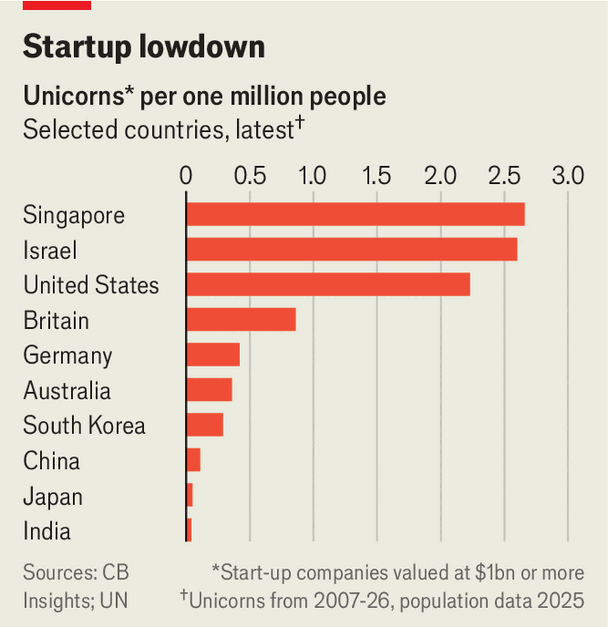

Japan’s downbeat startups need a lift
Can past success ever be rekindled?
Aug 13th 2026
Morita Akio, a physics graduate, co-founded the Tokyo Telecommunications Engineering Corporation, an electronics-maker, in 1946. The startup’s 20 employees toiled in a small room in a firebombed department store in Tokyo, handmaking heated cushions and voltmeters. Determination and resourcefulness turned the firm into a $140bn electronics giant today called Sony. Other well-known Japanese firms such as Honda, launched in a ruined factory also in 1946, or more recently SoftBank, beginning in 1981 as a small software distributor run by 24-year-old Son Masayoshi, have similar tales of battling against the odds. Yet in recent decades Japan has lost its knack for producing startups that make an impact.
Only six of the current 1,400 unicorns (startups worth over $1bn) worldwide were born in Japan, according to cb Insights, a research firm. The country has yet to spawn a “decacorn”, a startup worth more than $10bn. South Korea and Australia have bred five and six, respectively, and also lead in unicorns by size of population (see chart). A new wave of venture capitalists and entrepreneurs, backed by the state, are trying to put that right. They will have to confront three problems.

The first is Japan’s shortage of risk-taking venture capital. A decade ago traditional vc funds were rare. In 2015 only $1bn in vc capital was deployed across fewer than 500 deals, according to Pitchbook, a data firm. Though vc fund-raising has grown to around $6bn in 2025, that compares unfavourably with markets such as Australia, an economy half the size of Japan’s which raised $5bn last year. Seemingly natural backers of Japanese startups, such as Softbank’s vc arm, plough the vast majority of their funds into overseas firms.
Available capital is spread unevenly across different stages of a firm’s development. “A lack of late-stage risk capital is a big constraint,” says Murakami Yumiko of MPower Partners, a vc firm in Tokyo. Japan is in the top ten worldwide for early-stage funding (ie, deals worth less than $15m) but only 16th for bigger, late-stage deals, says Side Stage Ventures, another vc investor. In turn, a lack of promising firms in the vc pipeline has limited interest from global investors, the sort more likely to make such big-ticket investments later in a company's fund-raising journey.
A second problem is that Japanese startups go public too quickly. A promising young firm is often expected to dash to an initial public offering (ipo). Since the pandemic 57% of Japanese startups that have exited have gone public this way, compared with 23% in America and 13% in Britain. This is, in part, a product of too few mergers and acquisitions, the main way startups cash out in most of the world. Those needing liquidity are pushed to list. Investors quip that going public is Japan’s equivalent of a “series B” fund-raising round in America—a second modest injection of investment, often used to scale up.
Some firms thrive anyway. James Riney of Coral Capital, another vc firm based in Tokyo, argues that Japan boasts “hidden unicorns” that eventually cross a valuation of $1bn after going public early. But more often, pressure from vcs to prepare for a quick listing distracts management from building for long-term growth. The result is a profusion of tiny, stagnant listings. At the end of 2025 the median value of firms debuting on the “growth” market of the Tokyo Stock Exchange (tse) was a puny ¥10bn ($61m). There is not much punishment for a failed debut. Lax rules for delistings allow corporate minnows to languish on public markets.
The rush to list early is also partly the result of the low cultural standing of startups—the third factor holding back the country’s entrepreneurs. A societal aversion to risk means that just 24% of Japanese consider entrepreneurship a desirable occupation, compared with a global average of 67%, according to a survey by the Global Entrepreneurship Monitor, a research consortium. Startup founders and employees, particularly those quitting cushy jobs, face scepticism from family and friends. One result is to reinforce the rush to an ipo. “Stigma pushes founders to go public,” says Jordan Fisher of Antler Japan, another Tokyo-based vc firm.
On all three counts, matters are improving. There has been a rise in homegrown unicorns, helped by the ai boom. Last year Sakana ai, a model-maker, became Japan’s most valuable unicorn, with a valuation of $2.6bn. The government has given some assistance, too. In 2022 it launched an ambitious plan to cultivate new firms, including by mobilising public funds and putting a minister in charge of startups. In May the country’s economy ministry released fresh guidance encouraging startups to consider a buy-out as an exit option. Such attention has improved the image of startups. One founder notes that younger employees increasingly prefer working in fast-moving, new firms rather than the stodgy, seniority-based ones their parents worked for.
Helpfully the tse has begun cracking down on tiny, poorly performing firms. Last year it announced a plan to delist firms unable to maintain a market capitalisation of ¥10bn after being public for five years, up from ¥4bn over 10 years, though the rule will not take effect until 2030. “We want to make [an ipo] the starting point, not the end goal,” says Yamaji Hiromi, the exchange’s boss.
Japan has further to go. Having one decacorn operating at global scale might create a motivated acquirer of promising young companies, notes Mr Fisher, who draws a comparison with Silicon Valley’s titans buying startups founded by ex-employees. Japan’s 20th-century startup pioneers built huge businesses from lowly beginnings. Today’s founders will need the same drive to make it to the big time.■